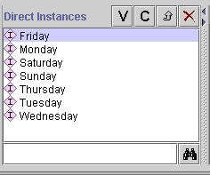

You can change the following global properties of a form:
The browser key identifies the different instances when they are displayed in a list. For example, the form for Prototype_Newspaper has the browser key set to weekday. This means that, in the Direct Instances Pane, the different instances are listed by the value in the weekday field.

If you do not select a slot to use as a browser key, Protégé-2000 uses a default key, <instance name>, such as newspaper_0017. It is usually helpful to set a browser key.
To set a browser key for a class:
Select the name of the class whose form you wish to edit in the Forms pane at the left of the Forms Tab.
Click the Browser Key menu. A list of slots is displayed.
Select the slot you wish to use as a browser key.
You can choose a widget that will expand as the form expands whenever the Protégé-2000 window is resized. This can be useful, for example, when you have a complex table widget that you wish to have take up most of the form. To do this:
Double-click anywhere on the background of the form, that is, on an area that does not contain a widget. The Form Configuration dialog box is displayed.
Click on the Layout tab.
To select a widget that will take up most the vertical room when the form expands, select the widget name from the Fill Vertical Space With: menu. Selecting <all> means each widget will expand equally.
To select a widget that will take up most the horizontal room when the form expands, select the widget name from the Fill Horizontal Space With: menu. You can select the same widget or a different one. Selecting <all> means each widget will expand equally.
To reset the form so that no widget expands more than the others, make sure that <all> is selected in both menus.
Note: For additional tasks that change a forms appearance, such as resizing, moving, changing, or hiding a widget, see the Forms Table of Contents.